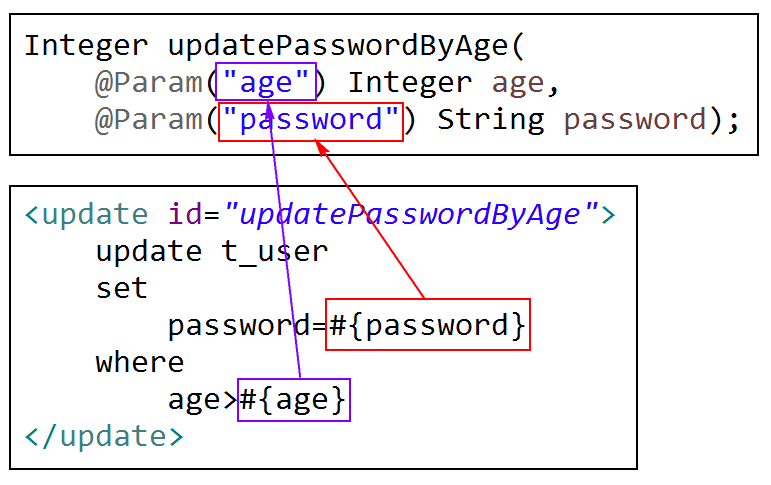
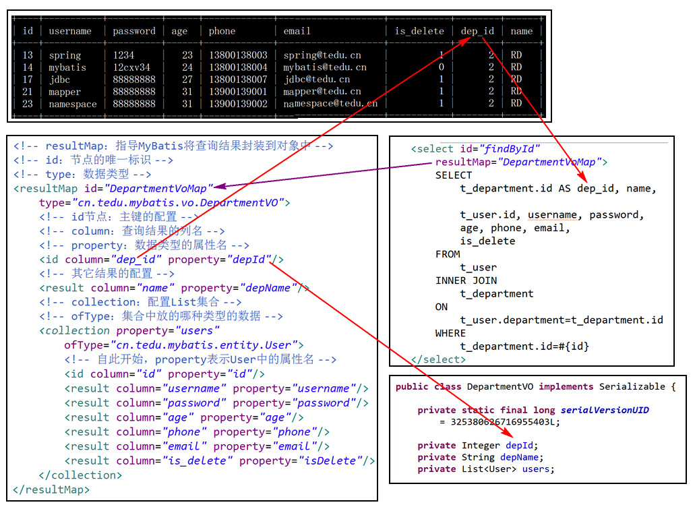

1. 执行插入数据时获取自增长的id
当需要获取新增的数据的id时，首先，需要在<insert>节点中添加2个属性：
useGeneratedKeys="true"
keyProperty="id"以上配置中，useGeneratedKeys表示获取自增长的键（自增长的字段的值），keyProperty表示键的属性名，即对应的类中的属性名（即该id是User类中的id，并非t_user表中的id）！
添加以上配置之后，插入数据操作的返回值依然表示“受影响的行数”，但是，用于执行插入操作的参数对象中就会包含自动生成的id值，例如，调用时的代码：
System.out.println("增加前：" + user);
Integer rows = userMapper.insert(user);
System.out.println("rows=" + rows);
System.out.println("增加后：" + user);结果例如：
增加前：User [id=null, username=jsd1808, password=1234, age=31, phone=13900139008, email=jsd1808@tedu.cn]
rows=1
增加后：User [id=24, username=jsd1808, password=1234, age=31, phone=13900139008, email=jsd1808@tedu.cn]可以记住：在配置
2. 使用多个参数
功能设定：将t_user表中年龄大于xx的数据的密码修改为xx
分析所执行的SQL语句：
update t_user set password=? where age>?抽象方法：
Integer updatePasswordByAge(
Integer age, String password);SQL映射：
<update id="updatePasswordByAge">
update t_user
set
password=#{password}
where
age>#{age}
</update>直接调用，会报告错误：
org.mybatis.spring.MyBatisSystemException: nested exception is org.apache.ibatis.binding.BindingException: Parameter 'password' not found. Available parameters are [arg1, arg0, param1, param2]
Caused by: org.apache.ibatis.binding.BindingException: Parameter 'password' not found. Available parameters are [arg1, arg0, param1, param2]因为.java文件在编译后变成.class文件就会丢失参数名称，在最终执行的.class文件中，根本就不存在名为password或age的参数，所以，程序会报错，可行的解决方法是把多个参数封装到一个Map中，这样的话，此前使用的方法名称例如age或password就会变成Map的key，是一些字符串，并不会因为编译而丢失，最终运行就不会有问题，当然，每次运行时都需要自行将参数封装为Map，操作麻烦，还存在key拼写错误的风险，所以，MyBatis提供了@Param注解以解决这个问题：

解决多个参数的问题：可以将多个参数封装为1个Map，或封装为1个自定义的数据类型，但是，更推荐使用@Param注解。
3. 关于resultMap
使用resultMap可以解决名称不匹配的问题！例如在数据表中存在is_delete字段，则实体类存在isDelete属性，则数据表中使用的名称与实体类中的属性名不一致！
前置操作：
alter table t_user add column is_delete int default 0;
update t_user set is_delete=1 where id in (11,13,15);然后，在User类中添加private Integer isDelete;及SET/GET方法，重新生成toString()。
名称不匹配的问题可以通过自定义别名来解决，例如：
<select id="findAll"
resultType="cn.tedu.mybatis.entity.User">
select
id, username, password,
age, phone, email,
is_delete AS isDelete
from t_user
</select>也就是：MyBatis的要求是“查询结果中的列名与返回值类型的属性名必须一致”，通过自定义别名就可以满足这个要求，并不需要通过<resultMap>来实现！
通常，需要自定义<resultMap>时，主要用于解决多表数据关联查询的问题。
例如：
create table t_department (
id int auto_increment,
name varchar(20) not null,
primary key(id)
);
insert into t_department (name) values ('UI'), ('RD'), ('TEST');
alter table t_user add column department int;通常实体类都是与数据表一一对应的，符合设计规范，但不适用于多表的关联查询，例如当需要“查询某个部门信息的同时需要获取该部门的所有员工的信息”，则没有任何数据类型可以匹配这样的信息，为了解决这样的问题，通常会定义VO类，即Value Object类，这种类型是专用于解决实体类不满足使用需求而存在的，类的设计结构与实体类非常相似，但是，属性的设计是完全根据使用需求来决定的，例如：
public class DepartmentVO {
private Integer depId;
private String depName;
private List<User> users;
// SET/GET方法，toString()，序列化接口
}普通的查询无法得到以上结果，查询语句可能是：
select
t_user.id, username, password, age, phone, email, is_delete,
t_department.id AS dep_id, name
from
t_user, t_department
where
t_user.department=t_department.id
and t_department.id=?以上查询易于理解，通俗易懂，但是，不推荐使用，更推荐使用JOIN系列的查询语法：
SELECT
t_user.id, username, password, age, phone, email, is_delete,
t_department.id AS dep_id, name
FROM
t_user
INNER JOIN
t_department
ON
t_user.department=t_department.id
WHERE
t_department.id=?这样的查询结果可能有好几行，
需要有效的封装到1个对象中，就必须依靠<resultMap>来设计封装的规则：
<!-- id：节点的唯一标识 -->
<!-- type：数据类型 -->
<resultMap id="DepartmentVoMap"
type="cn.tedu.mybatis.vo.DepartmentVO">
<!-- id节点：主键的配置 -->
<!-- column：查询结果的列名 -->
<!-- property：数据类型的属性名 -->
<id column="dep_id" property="depId"/>
<!-- 其它结果的配置 -->
<result column="name" property="depName"/>
<!-- 配置List集合 -->
<!-- ofType：集合中放的哪种类型的数据 -->
<collection property="users"
ofType="cn.tedu.mybatis.entity.User">
<!-- 自此开始，property表示User中的属性名 -->
<id column="id" property="id"/>
<result column="username" property="username"/>
<result column="password" property="password"/>
<result column="age" property="age"/>
<result column="phone" property="phone"/>
<result column="email" property="email"/>
<result column="is_delete" property="isDelete"/>
</collection>
</resultMap>配置方式可参考：

最后，应用时，与普通的数据操作相同，先添加接口与抽象方法：
public interface DepartmentMapper {
DepartmentVO findById(Integer id);
}然后配置映射：
<select id="findById"
resultMap="DepartmentVoMap">
SELECT
t_department.id AS dep_id, name,
t_user.id, username, password,
age, phone, email,
is_delete
FROM
t_user
INNER JOIN
t_department
ON
t_user.department=t_department.id
WHERE
t_department.id=#{id}
</select>最终，执行查询获取的结果例如：
DepartmentVO [
depId=2,
depName=RD,
users=[
User [id=13, username=spring, password=1234, age=23, phone=13800138003, email=spring@tedu.cn, isDelete=1, department=null],
User [id=14, username=mybatis, password=12cxv34, age=24, phone=13800138004, email=mybatis@tedu.cn, isDelete=0, department=null],
User [id=17, username=jdbc, password=88888888, age=27, phone=13800138007, email=jdbc@tedu.cn, isDelete=1, department=null],
User [id=21, username=mapper, password=88888888, age=31, phone=13900139001, email=mapper@tedu.cn, isDelete=1, department=null],
User [id=23, username=namespace, password=88888888, age=31, phone=13900139002, email=namespace@tedu.cn, isDelete=1, department=null]
]
]如果提示错误TooManyResultsException，则错误多半在于查询结果的列名与<resultMap>中普通的<id/>或<result/>节点的column的配置有误！也有可能存在例如2列的名称都是id，却有多条数据的id值不同的问题！
练习：存在学生表和班级表，学生表t_student中包括id, name, age, class_id，班级表t_class中包括id, name，最终，查询时，查某班级数据时将显示该班级所有学生的信息。涉及的类为Student、Clazz。
练习步骤1：创建2张数据表，插入一定量的数据，创建对应的实体类，创建班级的VO类：
create table t_class (
id int auto_increment,
name varchar(20),
primary key (id)
);
insert into t_class (name) values ('JSD1806'),('JSD1807'),('JSD1808');
create table t_student (
id int auto_increment,
name varchar(20),
age int,
class_id int,
primary key (id)
);
insert into t_student (name,age,class_id) values ('Mike', 20, 1), ('Tom', 21, 2), ('Terry', 21, 3), ('Jerry', 22, 2), ('Lucy', 22, 1), ('Kitty', 22, 2), ('Lily', 21, 3), ('Lilei', 20, 3), ('HanMM', 23, 3), ('XiaoMing', 21, 2);练习步骤2：创建cn.tedu.mybatis.mapper.ClazzMapper接口，复制得到src\main\resources\ClazzMapper.xml映射文件，这2个文件都是空文件即可。
练习步骤3：设计SQL语句：
SELECT
t_class.id AS cls_id,
t_class.name AS cls_name,
t_student.id AS stu_id,
t_student.name AS stu_name,
age, class_id
FROM
t_class
INNER JOIN
t_student
ON
t_class.id=t_student.class_id
WHERE
t_class.id=?;练习步骤4：抽象方法
ClazzVO findById(Integer id);练习步骤5：配置<select>
<select id="findById"
resultMap="ClazzVOMapper">
SELECT
t_class.id AS cls_id,
t_class.name AS cls_name,
t_student.id AS stu_id,
t_student.name AS stu_name,
age, class_id
FROM
t_class
INNER JOIN
t_student
ON
t_class.id=t_student.class_id
WHERE
t_class.id=#{id};
</select>练习步骤6：配置<resultMap>
<resultMap id="ClazzVOMapper"
type="cn.tedu.mybatis.vo.ClazzVO">
<id column="cls_id" property="clsId"/>
<result column="cls_name" property="clsName"/>
<collection property="student"
ofType="cn.tedu.mybatis.entity.Student">
<id column="stu_id" property="id"/>
<result column="stu_name" property="name"/>
<result column="age" property="age"/>
<result column="class_id" property="classId"/>
</collection>
</resultMap>课后练习：新添加考试成绩表t_score，包括字段id(int)、stu_id(int), subject(varchar), score(int)，要求最终实现：根据学生id查询出该学生的所有成绩，例如：
XX学生成绩单
学号：xx 姓名：xx
序号 | 科目 | 分数
1 Java 80
2 SQL 70